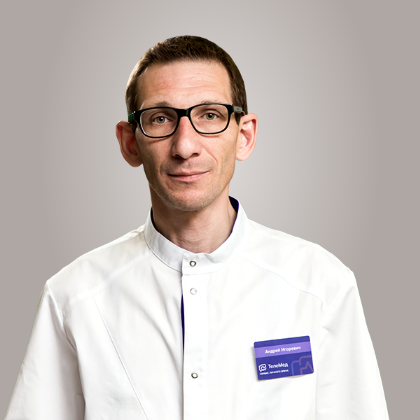

Наши врачи
В команду попадает только 1 из 17 специалистов. Важны не только знания, но и искреннее желание помогать людям и бороться за их здоровье. Лучшие специалисты, со средней оценкой консультации выше 4.8:
×
Мельников Андрей Игоревич

Врач - анестезиолог-реаниматолог, трансфузиолог
Заведующий отделением дистанционной медицинской помощи
Кандидат медицинских наук
Стаж работы: 20 лет
Заведующий отделением дистанционной медицинской помощи
Кандидат медицинских наук
Стаж работы: 20 лет
анестезиолог
Мельников Андрей Игоревич